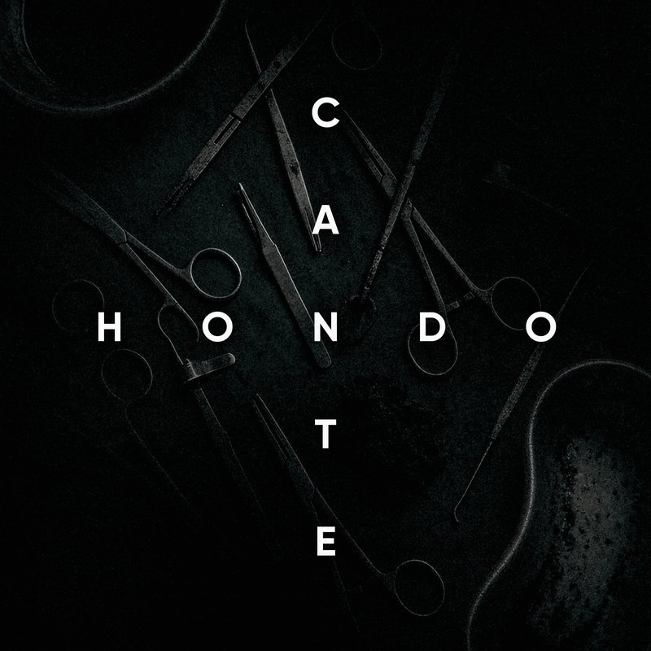

Андрей Трабл
Cante Hondo
Запись: Canterville
Текст, музыка, сведение, мастеринг, обложка: Андрей Трабл
Не позволяй мне отпираться. Я выживу, даже перенеся сто операций, тебе назло. Пусть это будет итерацией, просто не позволяй мне впредь на это опираться. Я падаю на пол самых блядужных квартир – это самый забавный квест, и мне его не пройти. Плюс мои линии с дамами в дополнение – пунктир. Я тот самый кутила с самым трезвым сердцем в груди. И ты врываешься в наглую, разрывая ряд из скоб, выгоняя наружу всех, кто заиметь мои мысли хотели. Я покажу ей звёзды, Саня, лишь дай телескоп, она не стерпит столько мертвых, но наглых Листьев, как телек. Ты запрёшь меня перед выходом в чьё-то окно, и найдёшь, видно, в этом выгоду. Но я успел заткнуть за пояс всех этих пропойц, хоть не успел на поезд, но так и остался двинутым. Хватит мечтать о чем-то. Пиши свое cante hondo. Теряю тебя, как доктор. В груди ритм бьёт пехота под новое cante hondo. Теряю тебя, как доктор. От меня все чего-то ждут, но никто не видит, что это – клиника. На горло также давит жгут, отсюда «Дохлая томная лирика». Практически – медалист. Немного бы – и талант. Еще чуть-чуть – и семья, где вы оба были бы теплыми. Но мне сложно на лист выдавать это всё на лад – я к этому времени вырос из мальчика с синим пороком в мужчину с заёбами. Для меня норма – не наблюдать зла. Для меня норма – не верить добру. Для меня норма – сказать всё, что ты не смогла. Я давно проходил «от» и «до» ту игру, ведь не раз я глазел на вокзал, я не раз ненавидел тот город вокруг. Я не раз видел свет вдалеке, что в глаза нам вонзал ту надежду, что это сапсан в Петербург. Я падаю на пол самых уютных и семейных кухонь и вслед за тем дарю ей песни – пусть себе хранит. Пока меня не придавил гранит, я взял билеты. Поехали со мной кукухой. Хватит мечтать о чем-то. Пиши свое cante hondo. Теряю тебя, как доктор. В груди ритм бьёт пехота под новое cante hondo. Теряю тебя, как доктор.